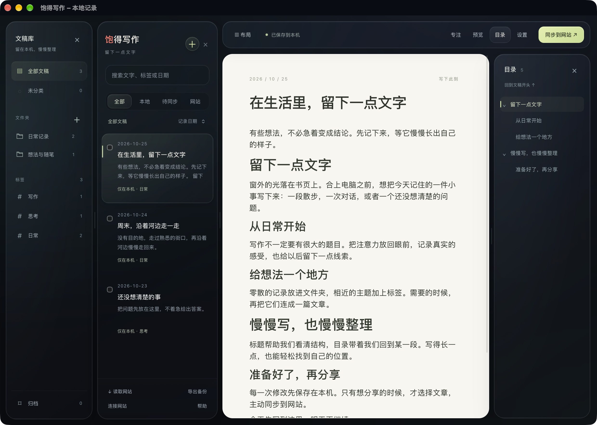

想到什么，就写下来。
自动保存在本机，图片也随文稿保存。标题、列表、表格和图片，都可以直接插入；需要安静时，打开专注模式。
● 已保存到本机 断网也能继续
A QUIET PLACE TO WRITE

实际应用截图 · 文稿均为演示内容
WORDS, AT YOUR OWN PACE.
自动保存在本机，图片也随文稿保存。标题、列表、表格和图片，都可以直接插入；需要安静时，打开专注模式。
用文件夹归类，用标签串起主题。标题目录帮你找到长文中的某一段；各栏可以调宽或隐藏，按自己的习惯写。
选择文稿后主动同步，文章和图片一起到网站。失败可重试；两端有修改时保留双方版本，由你决定采用哪一份。
START WITH A FEW WORDS
0.1.0 · 6.4 MB · 个人使用预览版
macOS 13 或更新版本，Apple Silicon / Intel。
GitHub Releases 提供下载，速度取决于网络。
当前采用本地签名，尚未经过 Apple 公证。
首次启动可能遇到 macOS 的开发者验证提示，请先阅读安装帮助。更新前退出应用，再覆盖安装，文稿与登录状态独立保存。
安装与使用帮助 ↗A FEW THINGS TO KNOW
本地写作、图片、文件夹、标签、搜索和备份不需要账号，也不需要联网。只有登录网站、读取或同步网站内容时需要网络。
首版的网站同步对接作者的 baode.life，需要该站现有管理员权限。暂不支持 WordPress、飞书或任意博客；其他用户可以独立使用本地写作和备份。
不会。文件夹与归档只整理本机。只有你主动选择文稿、点击同步并确认，才会公开到网站；删除文件夹也会保留其中的文章。
可以导出包含原始正文和图片的备份文件夹，并在应用内恢复。恢复前会保留当前本机库的安全副本。备份不包含密码或登录会话。
可以在 GitHub Issues 反馈，或联系作者。请附版本和问题描述，不要上传私人文稿、备份或登录信息。